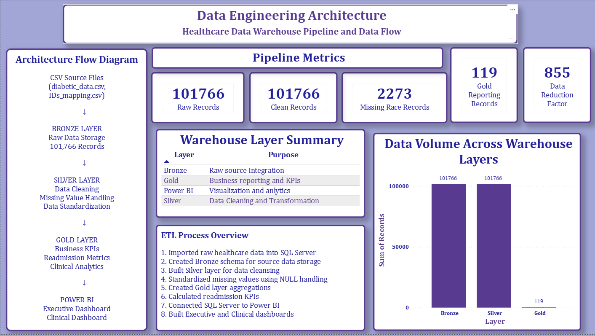
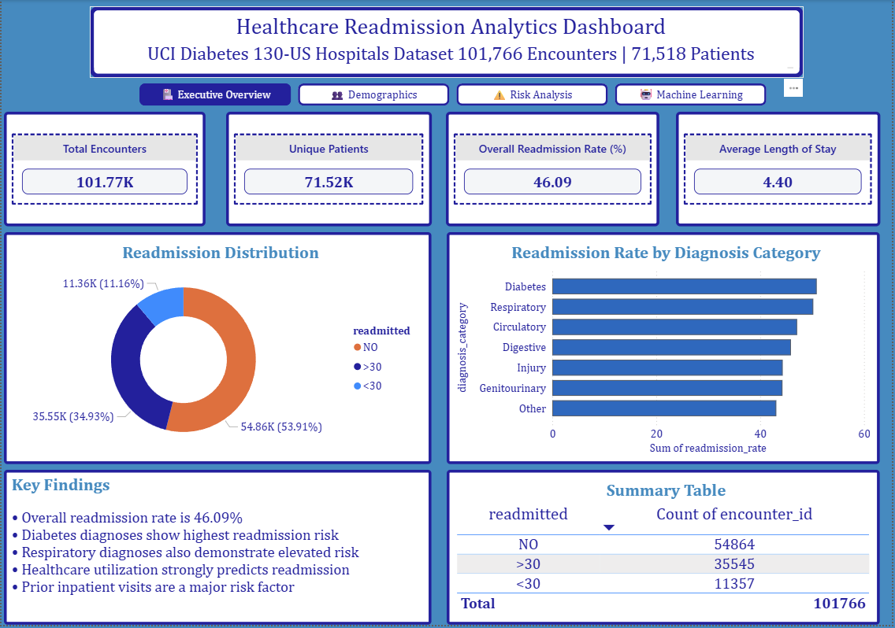
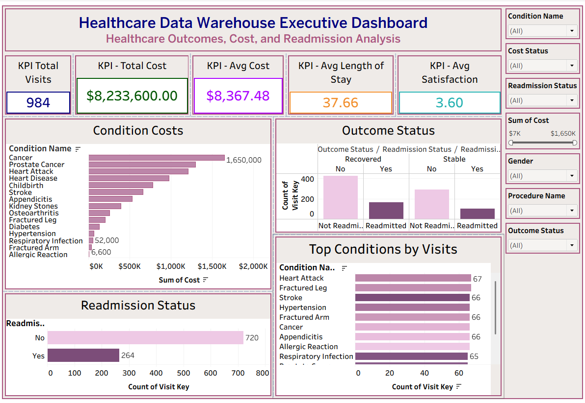
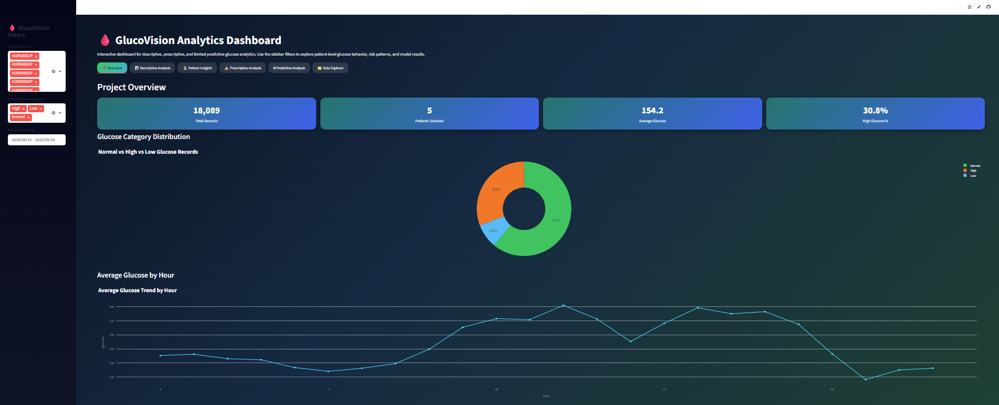
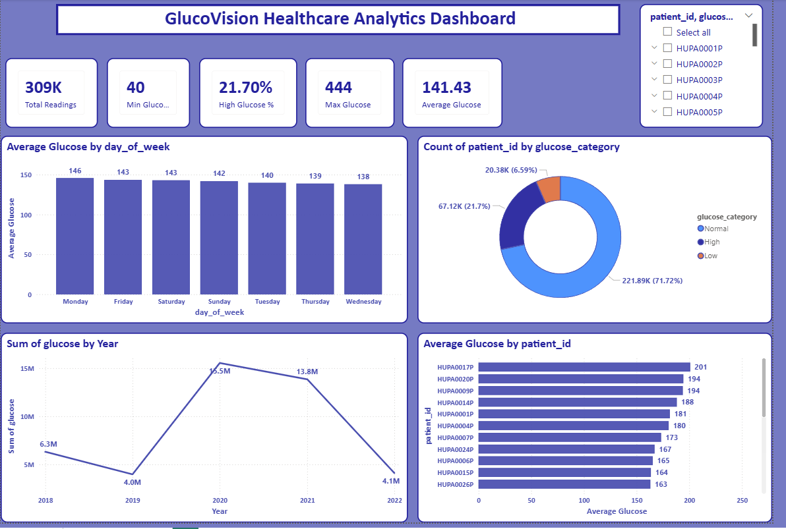
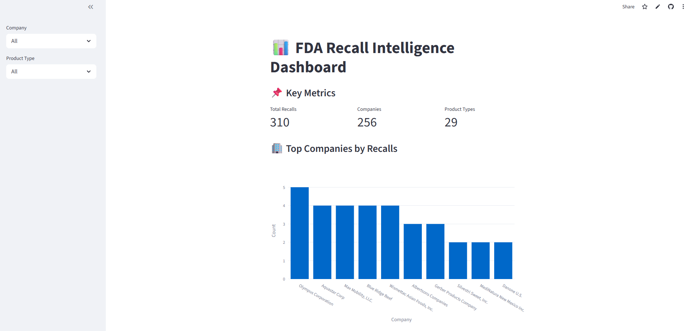

Python • SQL • PostgreSQL • Power BI • Tableau • Streamlit • Machine Learning • Data Engineering
View My ProjectsI am an aspiring Data Analyst and Healthcare Analytics professional with hands-on experience building end-to-end analytics, business intelligence, machine learning, and data engineering projects.
My portfolio demonstrates practical experience with Python, SQL, PostgreSQL, Power BI, Tableau, Streamlit, data warehousing, dashboard development, and healthcare data analysis.
I enjoy transforming raw data into actionable insights through data pipelines, dashboards, predictive models, and visual storytelling.

End-to-end healthcare data engineering project focused on transforming raw healthcare data into analytics-ready datasets and dashboards.
Tools: Python, SQL, PostgreSQL, Power BI, GitHub

Machine learning and dashboard project analyzing hospital readmission risk using healthcare encounter data.
Tools: Python, Pandas, Scikit-learn, Streamlit, Power BI

PostgreSQL data warehouse project using SQL, Tableau, and Streamlit to analyze healthcare visits, costs, outcomes, and readmissions.
Tools: PostgreSQL, SQL, Tableau, Streamlit, Python

Python-based diabetes glucose analytics project using continuous glucose monitoring data to identify trends, risks, and patient insights.
Tools: Python, Pandas, Streamlit, Plotly, Machine Learning

Interactive Power BI dashboard focused on diabetes glucose monitoring, healthcare KPIs, and patient-level insights.
Tools: Power BI, DAX, Data Modeling, Healthcare Analytics

Healthcare analytics dashboard analyzing FDA recall data to identify recall trends, high-risk companies, and affected product categories.
Tools: Python, Pandas, Streamlit, Plotly
Email: humsshaik@gmail.com
GitHub: github.com/HumsShaik
LinkedIn: LinkedIn Profile